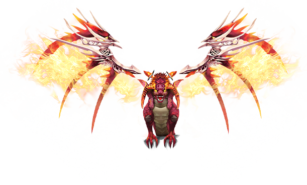
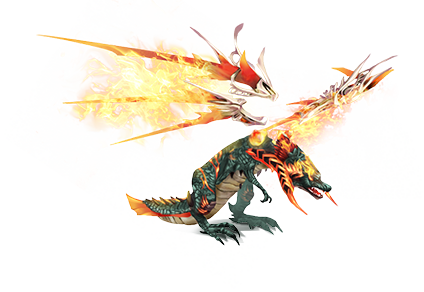
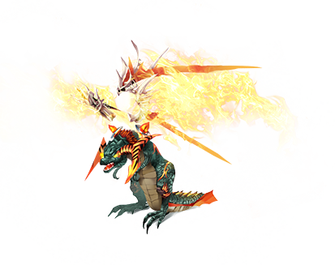
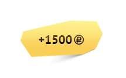
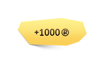

<!DOCTYPE html>
<html>
<head>
    <script src="http://ajax.googleapis.com/ajax/libs/jquery/1.11.1/jquery.min.js"></script>
    <link rel="stylesheet" href="css/styles.css"/>
    <title>Турнир 2×2 «Безумство храбрых». 13–22 сентября.</title>
</head>
<body>
	<section class="pAtlTour_bLayout">
		<h1 class="pAtlTour_bLayout__eTitle">Турнир 2&times;2 &laquo;Безумство храбрых&raquo;. <nobr>13&mdash;22 сентября</nobr>.</h1>
		<div class="pAtlTour_bLayout__eSlogan">Брось вызов лучшим командам Атлантики и&nbsp;разгроми их&nbsp;в&nbsp;честном бою!</div>
		<div class="pAtlTour_bPedestal">
			<div class="pAtlTour_bPedestal__eSalamandra pAtlTour_bPedestal__eSalamandra__mPlace_first"></div>
			<div class="pAtlTour_bPedestal__eSalamandra pAtlTour_bPedestal__eSalamandra__mPlace_second"></div>
			<div class="pAtlTour_bPedestal__eSalamandra pAtlTour_bPedestal__eSalamandra__mPlace_third"></div>
			<div class="pAtlTour_bPedestal__eMoney pAtlTour_bPedestal__eMoney__mPlace_first"></div>
			<div class="pAtlTour_bPedestal__eMoney pAtlTour_bPedestal__eMoney__mPlace_second"></div>
			<div class="pAtlTour_bPedestal__eMoney pAtlTour_bPedestal__eMoney__mPlace_third"></div>
			<div class="pAtlTour_bPedestal__ePrize pAtlTour_bPedestal__ePrize__mPlace_first">
				<div class="pAtlTour_bPedestal__ePrizeTitle">1 место</div>
				<div class="pAtlTour_bPedestal__ePrizeText">
					<div class="pAtlTour_bOpenHint">
						<span class="pAtlTour_bLayout__eLink pAtlTour_bLayout__eLink__mType_pseudo">Бессмертная саламандра</span>
						<div class="pAtlTour_bHint">
							<div class="pAtlTour_bHint__eContent">
								<p class="pAtlTour_bHint__eParagraph">Во время обычного боя маунт на 5 % увеличивает силу атаки (в том числе у наемников).</p>
								<p class="pAtlTour_bHint__eParagraph">Во время ТБС-боя маунт увеличивает силу атаки на 10 % (в том числе у наемников).</p>
								<div class="pAtlTour_bHint__eListContainer">
									<ul class="pAtlTour_bHint__eList pAtlTour_bHint__eList__mType_double pAtlTour_bHint__eList__mType_left">
										<li class="pAtlTour_bHint__eListItem">Сила атаки: 1360–1560</li>
										<li class="pAtlTour_bHint__eListItem">Защита: 20000</li>
										<li class="pAtlTour_bHint__eListItem">Сила: + 230</li>
										<li class="pAtlTour_bHint__eListItem">Ловкость: + 530</li>
									</ul>
									<ul class="pAtlTour_bHint__eList pAtlTour_bHint__eList__mType_double pAtlTour_bHint__eList__mType_right">
										<li class="pAtlTour_bHint__eListItem">Живучесть: + 570</li>
										<li class="pAtlTour_bHint__eListItem">Критический удар: 20</li>
										<li class="pAtlTour_bHint__eListItem">Магия Дыхание пламени 20 ур.</li>
										<li class="pAtlTour_bHint__eListItem">Скорость: + 30 %</li>
									</ul>
								</div>
							</div>
						</div>
					</div>
					<div>и 2500 бонусов Фогейма</div>
				</div>
			</div>
			<div class="pAtlTour_bPedestal__ePrize pAtlTour_bPedestal__ePrize__mPlace_second">
				<div class="pAtlTour_bPedestal__ePrizeTitle">2 место</div>
				<div class="pAtlTour_bPedestal__ePrizeText">
					<div class="pAtlTour_bOpenHint">
						<span class="pAtlTour_bLayout__eLink pAtlTour_bLayout__eLink__mType_pseudo">Саламандра</span>
						<div class="pAtlTour_bHint">
							<div class="pAtlTour_bHint__eContent">
								<p class="pAtlTour_bHint__eParagraph">Во время обычного боя маунт на 5 % увеличивает силу атаки (в том числе у наемников).</p>
								<p class="pAtlTour_bHint__eParagraph">Во время ТБС-боя маунт увеличивает силу атаки на 5 % (в том числе у наемников).</p>
								<div class="pAtlTour_bHint__eListContainer">
									<ul class="pAtlTour_bHint__eList pAtlTour_bHint__eList__mType_double pAtlTour_bHint__eList__mType_left">
										<li class="pAtlTour_bHint__eListItem">Сила атаки: 680–780</li>
										<li class="pAtlTour_bHint__eListItem">Защита: 15000</li>
										<li class="pAtlTour_bHint__eListItem">Сила: + 480</li>
										<li class="pAtlTour_bHint__eListItem">Ловкость: + 480</li>
									</ul>
									<ul class="pAtlTour_bHint__eList pAtlTour_bHint__eList__mType_double pAtlTour_bHint__eList__mType_right">
										<li class="pAtlTour_bHint__eListItem">Живучесть: + 520</li>
										<li class="pAtlTour_bHint__eListItem">Критический удар: 15</li>
										<li class="pAtlTour_bHint__eListItem">Магия Дыхание пламени 1 ур.</li>
										<li class="pAtlTour_bHint__eListItem">Скорость: + 25 %</li>
									</ul>
								</div>
							</div>
						</div>
					</div>
					<div>и 1500 бонусов Фогейма</div>
				</div>
			</div>
			<div class="pAtlTour_bPedestal__ePrize pAtlTour_bPedestal__ePrize__mPlace_third">
				<div class="pAtlTour_bPedestal__ePrizeTitle">3 место</div>
				<div class="pAtlTour_bPedestal__ePrizeText">
					<div class="pAtlTour_bOpenHint">
						<span class="pAtlTour_bLayout__eLink pAtlTour_bLayout__eLink__mType_pseudo">Саламандра</span>
						<div class="pAtlTour_bHint">
							<div class="pAtlTour_bHint__eContent">
								<p class="pAtlTour_bHint__eParagraph">Во время обычного боя маунт на 5 % увеличивает силу атаки (в том числе у наемников).</p>
								<p class="pAtlTour_bHint__eParagraph">Во&nbsp;время <nobr>ТБС-боя</nobr> маунт увеличивает силу атаки на&nbsp;5% (в&nbsp;том числе у&nbsp;наемников).</p>
								<div class="pAtlTour_bHint__eListContainer">
									<ul class="pAtlTour_bHint__eList pAtlTour_bHint__eList__mType_double pAtlTour_bHint__eList__mType_left">
										<li class="pAtlTour_bHint__eListItem">Сила атаки: 680–780</li>
										<li class="pAtlTour_bHint__eListItem">Защита: 15000</li>
										<li class="pAtlTour_bHint__eListItem">Сила: + 480</li>
										<li class="pAtlTour_bHint__eListItem">Ловкость: + 480</li>
									</ul>
									<ul class="pAtlTour_bHint__eList pAtlTour_bHint__eList__mType_double pAtlTour_bHint__eList__mType_right">
										<li class="pAtlTour_bHint__eListItem">Живучесть: + 520</li>
										<li class="pAtlTour_bHint__eListItem">Критический удар: 15</li>
										<li class="pAtlTour_bHint__eListItem">Магия Дыхание пламени 1 ур.</li>
										<li class="pAtlTour_bHint__eListItem">Скорость: + 25 %</li>
									</ul>
								</div>
							</div>
						</div>
					</div>
					<div>и 1000 бонусов Фогейма</div>
				</div>
			</div>
		</div>
		<div class="pAtlTour_bPedestal__eText">
			<div>Участники турнира получают <span class="pAtlTour_bOpenHint">
					<span class="pAtlTour_bLayout__eLink pAtlTour_bLayout__eLink__mType_pseudo">Ларец опытного воина</span>
					<div class="pAtlTour_bHint">
						<div class="pAtlTour_bHint__eContent pAtlTour_bHint__eContent__mType_narrow">
							<ul class="pAtlTour_bHint__eList">
								<li class="pAtlTour_bHint__eListItem">Символ славы x10</li>
								<li class="pAtlTour_bHint__eListItem">Свиток пробуждения (Событие) x5</li>
								<li class="pAtlTour_bHint__eListItem">Свиток очищения (Событие) x5</li>
								<li class="pAtlTour_bHint__eListItem">Свиток рассеивания (Событие) x5</li>
								<li class="pAtlTour_bHint__eListItem">Набор героя (3 дня/не передается)</li>
							</ul>
						</div>
					</div>
				</span> за 10 очков турнира </div>
			<div>и <span class="pAtlTour_bOpenHint">
					<span class="pAtlTour_bLayout__eLink pAtlTour_bLayout__eLink__mType_pseudo">Ларец начинающего воина</span>
					<div class="pAtlTour_bHint">
						<div class="pAtlTour_bHint__eContent pAtlTour_bHint__eContent__mType_narrow">
							<ul class="pAtlTour_bHint__eList">
								<li class="pAtlTour_bHint__eListItem">Символ славы x10</li>
								<li class="pAtlTour_bHint__eListItem">Свиток пробуждения (Событие) x5</li>
								<li class="pAtlTour_bHint__eListItem">Свиток очищения (Событие) x5</li>
								<li class="pAtlTour_bHint__eListItem">Свиток рассеивания (Событие) x5</li>
								<li class="pAtlTour_bHint__eListItem">Набор героя (3 дня/не передается)</li>
							</ul>
						</div>
					</div>
				</span> за каждое очко турнира.</div>
		</div>
		<div class="pAtlTour_bInfo">
			<div class="pAtlTour_bInfo__eTitle">Хочешь эти призы? Собирай команду и вступай в бой!</div>
			<div class="pAtlTour_bInfo__eColumnContainer">
				<div class="pAtlTour_bInfo__eColumn">
					<div class="pAtlTour_bInfo__eColumnTitle">Забудь про донат и прокачку персонажей</div>
					<div class="pAtlTour_bInfo__eColumnContent">Турнир будет проходить на&nbsp;<nobr>ПТС-сервере</nobr>, где участникам доступны все виды наемников, умений и&nbsp;экипировки. Победа зависит только от&nbsp;прямоты твоих рук и&nbsp;силы разума!</div>
				</div>
				<div class="pAtlTour_bInfo__eColumn">
					<div class="pAtlTour_bInfo__eColumnTitle">Продолжай борьбу до самого финала</div>
					<div class="pAtlTour_bInfo__eColumnContent">Создай команду, способную победить в&nbsp;круговом турнире по&nbsp;<a href="http://ru.wikipedia.org/wiki/%D8%E2%E5%E9%F6%E0%F0%F1%EA%E0%FF_%F1%E8%F1%F2%E5%EC%E0" target="_blank" class="pAtlTour_bLayout__eLink">Швейцарской системе</a> (Swiss System). Набери больше всего очков и&nbsp;попади в&nbsp;финал. Важно не&nbsp;везение, а&nbsp;количество выигранных боев.</div>
				</div>
				<div class="pAtlTour_bInfo__eColumn">
					<div class="pAtlTour_bInfo__eColumnTitle">Сражайся с командами равной силы</div>
					<div class="pAtlTour_bInfo__eColumnContent">Для каждого раунда соперники подбираются автоматически в&nbsp;зависимости от&nbsp;количества предыдущих побед. Шансы у&nbsp;всех равны.</div>
				</div>
			</div>
		</div>
		<div class="pAtlTour_bHiddenInfo">
			<div class="pAtlTour_bHiddenInfo__eLinkContainer">
				<span class="pAtlTour_bHiddenInfo__eLink pAtlTour_bLayout__eLink pAtlTour_bLayout__eLink__mType_pseudo" data-id="1">Описание турнира</span>
			</div>
			<div class="pAtlTour_bHiddenInfo__eContainer" data-id="1">
				<h2 class="pAtlTour_bHiddenInfo__eTitle">Описание турнира 2×2 «Безумство храбрых»</h2>
				<div class="pAtlTour_bHiddenInfo__eColumnContainer">
					<div class="pAtlTour_bHiddenInfo__eColumn">
						<div class="pAtlTour_bHiddenInfo__eSection">
							<div class="pAtlTour_bHiddenInfo__eSectionTitle">Сервер ПТС</div>
							<div class="pAtlTour_bHiddenInfo__eSectionContent">Турнир проводится на отдельном ПТС-сервере. Сервер откроется за десять дней до начала соревнований. На нем будут доступны все призывы для наемников, экипировка, руда для заточки, купоны на повышение уровня персонажей.</div>
						</div>
						<div class="pAtlTour_bHiddenInfo__eSection">
							<h3 class="pAtlTour_bHiddenInfo__eSectionTitle">Регистрация</h3>
							<div class="pAtlTour_bHiddenInfo__eSectionContent">Для участия в турнире необходимо за два дня до соревнований сформировать команду на ПТС-сервере:</div>
							<ul class="pAtlTour_bHiddenInfo__eUList">
								<li class="pAtlTour_bHiddenInfo__eUListItem">создать персонажей (на аккаунте персонажа, с которого подана заявка);</li>
								<li class="pAtlTour_bHiddenInfo__eUListItem">вступить в гильдию (это будет ваша команда);</li>
								<li class="pAtlTour_bHiddenInfo__eUListItem">пройти обязательный тренировочный бой.</li>
							</ul>
							<h4 class="pAtlTour_bHiddenInfo__eSectionSubTitle">Турнирные гильдии</h4>
							<ol class="pAtlTour_bHiddenInfo__eOList">
								<li class="pAtlTour_bHiddenInfo__eOListItem">Гильдия создается с тем же названием, что и название команды.</li>
								<li class="pAtlTour_bHiddenInfo__eOListItem">Главой гильдии может быть только капитан.</li>
								<li class="pAtlTour_bHiddenInfo__eOListItem">Наличие сторонних игроков в турнирной гильдии недопустимо.</li>
								<li class="pAtlTour_bHiddenInfo__eOListItem">Игроки вне турнирных гильдий к соревнованию не допускаются.</li>
							</ol>
							<h4 class="pAtlTour_bHiddenInfo__eSectionSubTitle">Построение</h4>
							<ol class="pAtlTour_bHiddenInfo__eOList">
								<li class="pAtlTour_bHiddenInfo__eOListItem">Построение каждого игрока может содержать любое количество наемников.</li>
								<li class="pAtlTour_bHiddenInfo__eOListItem">В итоговом составе команды не должно быть главных персонажей одного класса.</li>
								<li class="pAtlTour_bHiddenInfo__eOListItem">Менять наемников в построении разрешено как между раундами, так и между боями.</li>
								<li class="pAtlTour_bHiddenInfo__eOListItem">Менять класс главного наемника запрещено.</li>
								<li class="pAtlTour_bHiddenInfo__eOListItem">Замена в командах производится только с согласия главного судьи соревнования.</li>
							</ol>
						</div>
						<div class="pAtlTour_bHiddenInfo__eSection">
							<h3 class="pAtlTour_bHiddenInfo__eSectionTitle">Нарушения и судейство</h3>
							<div class="pAtlTour_bHiddenInfo__eSectionContent">Степень нарушения и мера наказания определяется судьей соревнований. Судьи турнира разрешают спорные ситуации по предоставленным записям боя. Оспорить решение судьи можно только у главного судьи соревнований.</div>
							<ol class="pAtlTour_bHiddenInfo__eOList">
								<li class="pAtlTour_bHiddenInfo__eOListItem">За легкое нарушение, которое не влияет на ход боя (либо происходит в самом начале раунда), выносится предупреждение.</li>
								<li class="pAtlTour_bHiddenInfo__eOListItem">За два предупреждения или за среднее нарушение, влияющее на ход боя, засчитывается Техническое Поражение.</li>
								<li class="pAtlTour_bHiddenInfo__eOListItem">За опоздание на бой более 10 минут засчитывается проигрыш матча.</li>
								<li class="pAtlTour_bHiddenInfo__eOListItem">За серьезное нарушение правил (неспортивное поведение, попытки обмана судьи и другие нарушения, отмеченные судьей) команда дисквалифицируется.</li>
								<li class="pAtlTour_bHiddenInfo__eOListItem">При технических проблемах дальнейший ход игры определяется судьей соревнований.</li>
							</ol>
							<h4 class="pAtlTour_bHiddenInfo__eSectionSubTitle">Расписание турнира</h4>
							<div class="pAtlTour_bHiddenInfo__eSectionContent">Посмотреть расписание раундов турнира и матчей можно в отдельной теме на форуме и на странице турнира. Информация о боях (расписание, локации и судьи) будет обновляться перед каждым раундом.</div>
						</div>
					</div>
					<div class="pAtlTour_bHiddenInfo__eColumn">
						<div class="pAtlTour_bHiddenInfo__eSection">
							<h3 class="pAtlTour_bHiddenInfo__eSectionTitle">Система турнира</h3>
							<div class="pAtlTour_bHiddenInfo__eSectionContent">Турнир проходит по Швейцарской системе (swiss system) в три этапа. Команды сражаются друг с другом в круговых раундах, зарабатывая очки за выигранные матчи и бои. В финал проходят сильнейшие команды турнира с наивысшем рейтингом (количество набранных в матчах очков).</div>
						</div>
						<div class="pAtlTour_bHiddenInfo__eSection">
							<h4 class="pAtlTour_bHiddenInfo__eSectionSubTitle">Первый этап</h4>
							<ol class="pAtlTour_bHiddenInfo__eOList">
								<li class="pAtlTour_bHiddenInfo__eOListItem">На первом этапе проводится 3–4 раунда турнира, количество которых зависит от количества команд-участников.</li>
								<li class="pAtlTour_bHiddenInfo__eOListItem">Первый этап заканчивается, когда сыграны все заявленные раунды.</li>
								<li class="pAtlTour_bHiddenInfo__eOListItem">В следующий этап проходят команды, набравшие больше 5–6 очков.</li>
							</ol>
							<h4 class="pAtlTour_bHiddenInfo__eSectionSubTitle">Второй этап</h4>
							<ol class="pAtlTour_bHiddenInfo__eOList">
								<li class="pAtlTour_bHiddenInfo__eOListItem">На втором этапе проходит от 2 до 10 раундов (в зависимости от результатов первого этапа)</li>
								<li class="pAtlTour_bHiddenInfo__eOListItem">Второй этап заканчивается, когда сыграны все заявленные раунды.</li>
								<li class="pAtlTour_bHiddenInfo__eOListItem">В финал проходят команды, стоящие выше третьего места в рейтинге. Например, если второй этап команды заканчивают с очками 25, 24, 22, 22, 21, 21, 21, 20, …, то в финальный этап попадут все команды с очками больше, чем 21.</li>
								<li class="pAtlTour_bHiddenInfo__eOListItem">При нечетном количестве команд-финалистов (более 3) в финал добирается следующая по рейтингу команда. Если таких команд несколько, то выбор совершается случайным образом.</li>
							</ol>
							<h4 class="pAtlTour_bHiddenInfo__eSectionSubTitle">Финал</h4>
							<ol class="pAtlTour_bHiddenInfo__eOList">
								<li class="pAtlTour_bHiddenInfo__eOListItem">В финале проходит 2 раунда. </li>
								<li class="pAtlTour_bHiddenInfo__eOListItem">Для победы в финальных матчах необходимо выиграть 3 боя.</li>
								<li class="pAtlTour_bHiddenInfo__eOListItem">Если команды на призовых местах после всех раундов имеют равную сумму очков, то назначаются дополнительные бои. В дополнительны боях команды распределяются по местам, но не получают рейтинговых очков.</li>
							</ol>
							<h4 class="pAtlTour_bHiddenInfo__eSectionSubTitle">Раунды</h4>
							<ol class="pAtlTour_bHiddenInfo__eOList">
								<li class="pAtlTour_bHiddenInfo__eOListItem">Количество раундов зависит от количества участников турнира (от 5 до 15 раундов). </li>
								<li class="pAtlTour_bHiddenInfo__eOListItem">За один раунд каждая команда проводит один матч. </li>
							</ol>
							<h4 class="pAtlTour_bHiddenInfo__eSectionSubTitle">Раунды</h4>
							<ol class="pAtlTour_bHiddenInfo__eOList">
								<li class="pAtlTour_bHiddenInfo__eOListItem">Матч состоит из нескольких боев между двумя командами.</li>
								<li class="pAtlTour_bHiddenInfo__eOListItem">Распределение матчей между командами происходит автоматически (по рейтингу предыдущего раунда).</li>
								<li class="pAtlTour_bHiddenInfo__eOListItem">Для победы над соперником в матче требуется выиграть у него 2 боя (в финале — 3 боя).</li>
								<li class="pAtlTour_bHiddenInfo__eOListItem">За каждый выигранный бой команда получает 1 очко, и еще 1 очко за поебеду в матче. Таким образом, счет обычного матча может быть либо 1:3, либо 0:3.</li>
							</ol>
							<h4 class="pAtlTour_bHiddenInfo__eSectionSubTitle">Бои</h4>
							<ol class="pAtlTour_bHiddenInfo__eOList">
								<li class="pAtlTour_bHiddenInfo__eOListItem">Перед началом боя каждая команда вступает в свою группу. </li>
								<li class="pAtlTour_bHiddenInfo__eOListItem">Капитан первой по таблице турнира команды бросает вызов второй команде.</li>
								<li class="pAtlTour_bHiddenInfo__eOListItem">Очередность вызова меняется после каждого боя.</li>
								<li class="pAtlTour_bHiddenInfo__eOListItem">Все бои фиксируются капитаном на видео и передаются в записи судьям.</li>
								<li class="pAtlTour_bHiddenInfo__eOListItem">Результаты каждого боя капитан сообщает судье.</li>
							</ol>
						</div>
					</div>
				</div>
				<div class="pAtlTour_bHiddenInfo__eLinkCloseContainer">
					<span class="pAtlTour_bHiddenInfo__eLink pAtlTour_bLayout__eLink pAtlTour_bLayout__eLink__mType_pseudo" data-id="1">Свернуть описание турнира</span>
				</div>
			</div>
		</div>
		<div class="pAtlTour_bRegister">
			<a class="bUIButton pAtlTour_bRegister__eButton" target="_blank" href="https://challonge.com/users/new">Зарегистрируй команду</a>
			<div class="pAtlTour_bRegister__eText">
				<p>Регистрация на турнир проходит на сайте <a href="https://challonge.com/" target="_blank" class="pAtlTour_bLayout__eLink">challonge.com</a></p>
				<p>Перед регистрацией ознакомься с <a href="#" class="pAtlTour_bLayout__eLink">правилами турнира</a></p>
			</div>
		</div>
		<script>
			(function($){
				var $hiddenInfoLink = $('.pAtlTour_bHiddenInfo__eLink');
				$hiddenInfoLink.on('click', function(){
					var $this = $(this),
						id = $this.data().id,
						$container = $this.closest('.pAtlTour_bHiddenInfo');
					$container.find('.pAtlTour_bHiddenInfo__eContainer[data-id="' + id + '"]').toggleClass('pAtlTour_bHiddenInfo__eContainer__mType_opened');
				})
			})(jQuery)
		</script>
	</section>
</body>
</html>